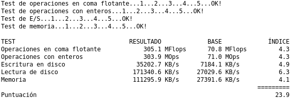
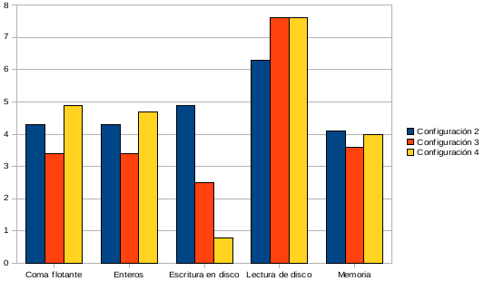

Los objetivos de la práctica son claros; evaluación y comparación del rendimiento de diferentes equipos, los parámetros a evaluar son los siguientes:
Los resultados son obtenidos mediante las medias aritméticas de varias repeticiones para que afecte lo menos posible el funcionamiento del sistema y, en el caso de los test de E/S de disco y memoria se repetirán también con distintos tamaños de bloque.
Los índices se calculan en base a lo contenido en el fichero base.h, estos valores han sido obtenidos con este mismo benchmark de un equipo con una configuración hardware obsoleta.
En lo relativo a la portabilidad el benchmark, he tenido mucho cuidado de elegir las funciones de C (lenguaje en el que está programado) que cumplan el estándar ANSI C para de esta forma obtener una total portabilidad. También es relevante la forma en que realizo la compilación para MS Windows; hago uso de un fichero Makefile.win (compilaríamos con make -f Makefile.win) de forma que con la utilidad MinGW (en Debian son necesarios al menos los paquetes mingw32, mingw32-binutils y mingw32-runtime) realizo una compilación cruzada y de esta forma obtengo un fichero binario para dicha plataforma. Aunque no es necesario que nos preocupemos de las compilaciones ya que en el directorio bin incluyo ya los ejecutables compilados para Linux y MS Windows.

Ejemplo de ejecución del benchmark en GNU/Linux
He evaluado mediante el benchmark las siguientes configuraciones:
NOTA: A partir de ahora resaltaré en verde la información del equipo tomado como base (Configuración 1).
| Configuración 1 | Configuración 2 | Configuración 3 | Configuración 4 | |
|---|---|---|---|---|
| Modelo | - | - | HP Compaq nx6110 | - |
| Procesador | Intel Pentium II 450 MHz | AMD Athlon XP 2100+ (1.73 GHz) | Pentium M 730 1.6GHz | Pentium 4 2.00 GHz |
| RAM | 320 MB SDRAM | 512 MB DDR | 512 MB DDR | 512 MB DDR |
| Sistema operativo | Windows 98 SE | Ubuntu 8.04.2 | Debian 5.0 (Lenny) | Windows XP SP2 |
| Disco duro | Maxtor 90871U2 8.4 GB | Seagate Barracuda 40 GB | Hitachi Travelstar 80 GB | Fujitsu 40 GB |
Obtenemos los siguientes resultados en términos absolutos, como de costumbre, los tests han sido ejecutados con el sistema recien arrancado, en estado base y se han realizado 5 repeticiones para alcanzar una precisión aceptable:
| Configuración 1 | Configuración 2 | Configuración 3 | Configuración 4 | |
|---|---|---|---|---|
| Coma flotante | 70.8 MFlops | 305.1 MFlops | 244.2 MFlops | 345.5 MFlops |
| Enteros | 71.0 MOps | 303.9 MOps | 244.6 MOps | 331.0 MOps |
| Escritura en disco | 7184.1 KB/s | 35202.7 KB/s | 18186.0 KB/s | 5820.3 KB/s |
| Lectura de disco | 72029.6 KB/s | 171340.6 KB/s | 206151.4 KB/s | 206575.9 KB/s |
| Memoria | 27391.6 KB/s | 111295.9 KB/s | 98544.9 KB/s | 110497.2 KB/s |
Podemos ver que se han obtenido valores anormalmente altos en las lecturas de disco, algo posible ya que el disco o el sistema ha mantenido en la caché lo último que hemos escrito, es decir, tiene en caché precisamente lo que vamos a leer.
Esta tabla representa los resultados en índices (mayor es mejor para todos los casos):
| Configuración 1 | Configuración 2 | Configuración 3 | Configuración 4 | Puntuación | 5.0 | 23.9 | 20.5 | 22.0 |
|---|---|---|---|---|
| Coma flotante | 1.0 | 4.3 | 3.4 | 4.9 |
| Enteros | 1.0 | 4.3 | 3.4 | 4.7 |
| Escritura en disco | 1.0 | 4.9 | 2.5 | 0.8 |
| Lectura de disco | 1.0 | 6.3 | 7.6 | 7.6 |
| Memoria | 1.0 | 4.1 | 3.6 | 4.0 |
Y su representación gráfica es:

Gráfica de los índices
Como vemos, la Configuración 4 alcanza los mejores resultados en los tests de coma flotante y enteros, esto nos indica que tiene el procesador más potente del resto. También alcanza un valor alto en el test de lectura de disco (igual practicamente al del equipo de la Configuración 3), pero este valor no es muy seguro por lo que comenté anteriormente.
La Configuración 2 ha obtenido un valor bastante bueno en el tests de escritura en disco, esto se explica por el sistema de archivos del disco duro (XFS) y el buen estado en que se encuentra, sin embargo, el resultado en la Configuración 3 deja mucho que desear, ya que ha alcanzado un valor tan bajo que hasta la configuración base lo ha superado. Esto se debe principalmente al sistema de archivos de dicho ordenador (NTFS) y al estado en que se encuentra la partición (muy fragmentada y practicamente llena).
El ganador de nuestros test es la Configuración 2. La Configuración 4 ha estado a punto de llevarse el trofeo, ya que en la mayoría de los tests obstenta los mejores resultados, sin embargo, el resultado tan malo obtenido en el test de escritura la ha alejado.